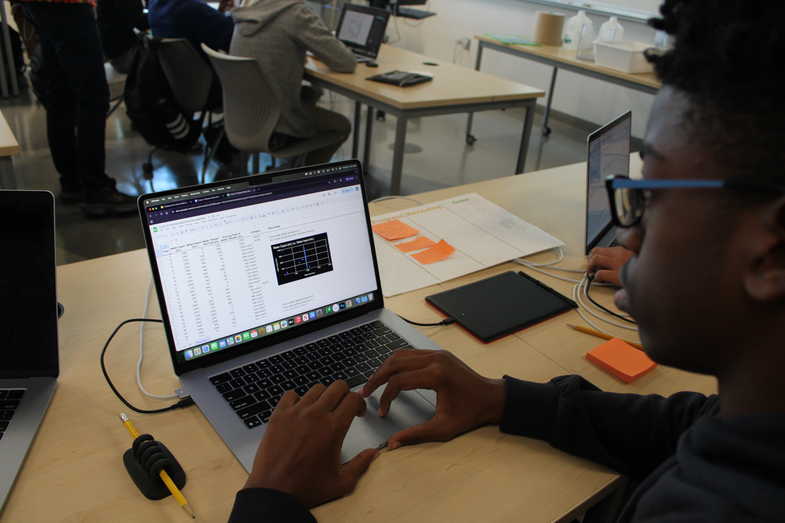

This will be an overview of all of the projects in New Media Tech class, and, overall, which 21st-century skill I think I represented the most. So I think I best represented Initiative, self-direction, and accountability the most out of any of the projects, especially in the final, and I say this because I spent more time in office hours staying back and doing the website more than anything else.